Side view of skating on two legs

Back view of skating on two legs
We visualize never-before-seen skating skills on two legs generated by MimicAgent.
Abstract
We present MimicAgent, a text-to-trajectory generation framework for learning dynamic quadruped skills. Although reward shaping is extensively used when training quadruped policies, navigating the resulting reward landscape is notoriously difficult, requiring hours of "graduate student descent". Eureka attempts to automate reward design with LLMs, but we find that it struggles to generalize across diverse skills and morphologies. Motivated by the success of example-guided RL for humanoids, we revisit skill learning from demonstrations for quadrupeds. Unlike humanoids, which can exploit large-scale motion capture datasets for learning, quadrupeds lack such reference motion data. We make the observation that manually keyframing quadruped reference motions can be more intuitive than reward shaping; in particular, we find that rather coarse and even dynamically-infeasible motions can still be effective reference targets for example- guided RL. However, manual keyframing is still too cumbersome to scale for learning large skill libraries. To address this challenge, we propose an LLM-based pipeline that generates kinematically feasible quadruped trajectories for diverse skills. Although these trajectories are not dynamically feasible, we show that they are sufficient to train successful policies with DeepMimic. Across all evaluated skills, human raters consistently prefer policies generated by MimicAgent over those produced by Eureka.
Baseline Comparisons
We compare MimicAgent against two state-of-the-art baselines (Eureka and Manual Keyframing) across five different skills: Walking, Bounding, Side Flip, Front Flip, and Aerial Crossover. Each video demonstrates the performance of different methods on the same skill.
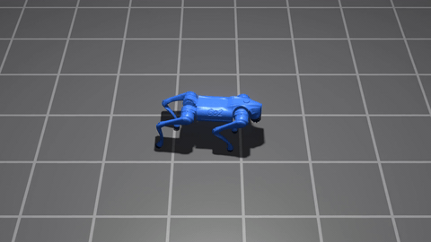
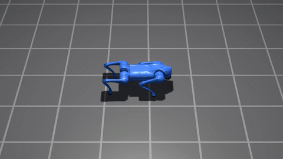
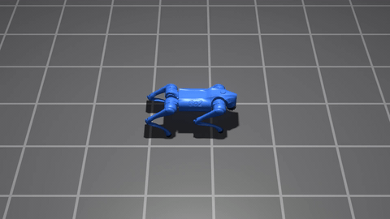
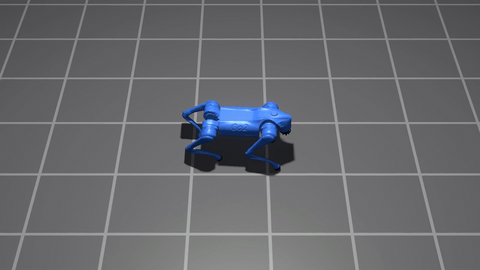
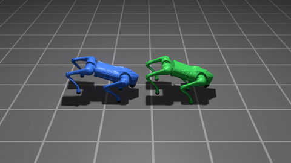
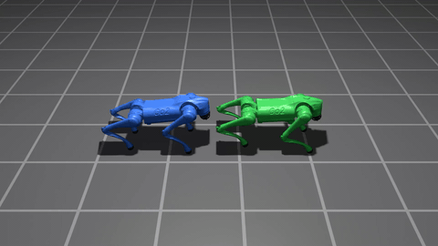
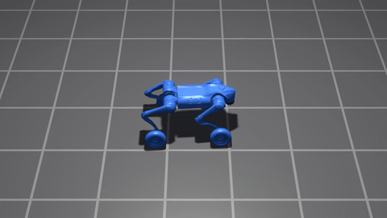
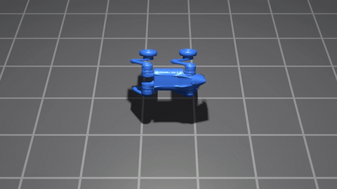
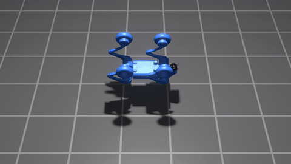
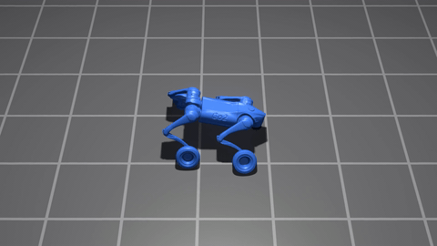
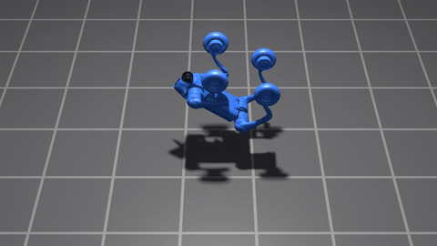
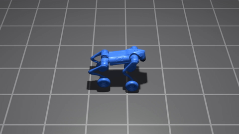
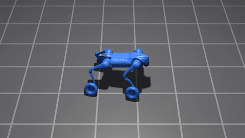
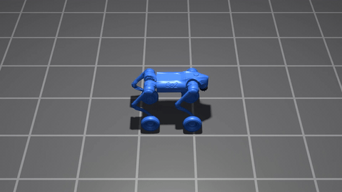
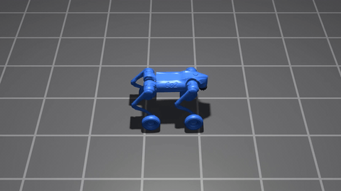
Diverse Skills Demonstration
MimicAgent successfully learns and executes 10 diverse locomotion skills from text descriptions. Each skill showcases different aspects of dynamic quadruped movement and coordination. The green robot shows the reference trajectory generated by MimicAgent, and the blue robot shows the learned policy.

Forward locomotion using fully independent leg motions, where each leg traces a distinct periodic trajectory, collectively producing smooth translation and stability

Legs traces a diamond-shaped pattern on the ground

Circular motion where base sways side-to-side perpendicular to travel direction like swinging hammock

Forward motion through alternating full-body compression and extension cycles.

Rapid in-place yaw spinning with expanding and contracting limb radius creating tornado-like appearance.

Forward locomotion driven by large-amplitude lateral base swaying like an inverted pendulum metronome.

Forward locomotion where diagonal leg pairs orbit around their shared center while base translates

Sideways locomotion where legs rotate like pinwheel blades while base translates laterally.

Forward skating using propeller-like leg rotations for continuous thrust

Backward lateral locomotion via cartwheel-style rotations where legs trace circular arcs while drifting backward
Keyframing vs. MimicAgent
We compare MimicAgent with manual keyframed trajectories on two challenging skills: Crab Diagonal Scuttle (i.e., a diagonal locomotion with body oriented perpendicular to travel direction) and Reverberating Yaw Pulse (i.e., in-place yaw rotation using damped oscillatory pulses that gradually settle). MimicAgent produces smoother, more natural motions compared to our baselines.
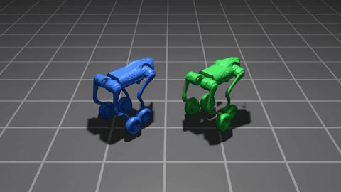
Keyframing: Crab Diagonal Scuttle
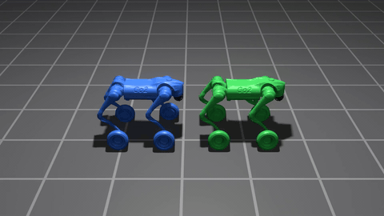
MimicAgent: Crab Diagonal Scuttle
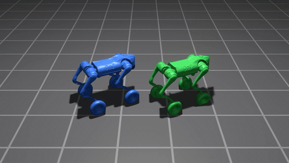
Keyframing: Reverberating Yaw Pulse
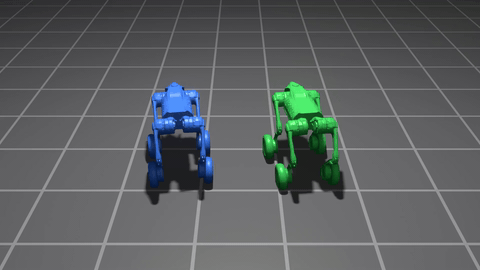
MimicAgent: Reverberating Yaw Pulse
Citation
If you find our work useful, please cite:
@article{author2025mimicagent,
title = {MimicAgent: Learning Quadruped Skills via Text-to Trajectory Generation},
author = {Narayanan Palghat Parameswaran, Lucky Kant Nayak, Neehar Peri, Deva Ramanan},
journal = {Conference/Journal Name},
year = {2026}
}